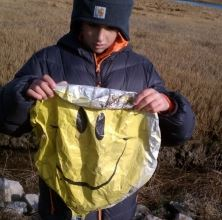

March 12, 2016
Never Forget

If ever there was someone to remind us to celebrate, and to relish in the love of family and friends, it was Finley. Today, on her twentieth birthday, her memory and spirit are as alive as ever. As we have for the past two years, we’ll use these forty days between Finley’s birthday and her other big day – Earth Day – to share with you a “daily motivation” about what you can do to help lighten your footprint on the one planet we all share. And on Earth Day itself (April 22nd) we’ll announce the third annual round of grants from Finley’s Green Leap Forward Fund. (Spoiler alert: Thanks to all of you who have been working to make the fund grow, in 2016 you’ll see some new organizations benefiting from Finley’s vision!)
And on Finley’s birthday, a celebratory day, we turn our attention to balloons! Balloons, both mylar and latex, can brighten anyone’s day … that is, until they get blown away by the breezes, or lifted up into the skies. Unfortunately, everything that goes up, must come back down. When a balloon comes back down, it isn’t so pretty any more. Sometimes, they are downright deadly: there isn’t much to celebrate when birds, turtles, or fish accidentally eat them or get tangled in their ribbons. So, the next time you have a celebration in your life, liven it up with something other than balloons. Want to know more? Check out: http://balloonsblow.org/
{kind=link}